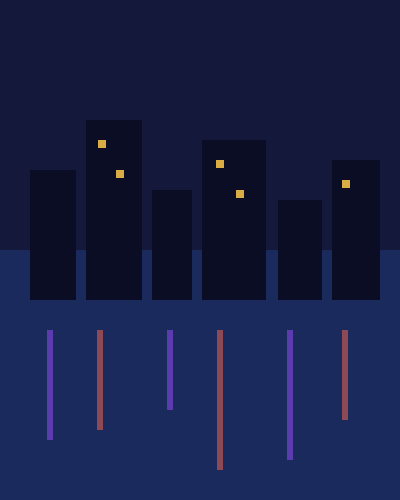

Event name · Project showcase

Event name · Deep dive
A peek insidethe black box.

Builder · Speaker · Your city
Your Name (handle)
One line about what you do. One line about tonight.
Builder · Speaker · Your city
Your Name (handle)
The three things you work on, in one line. Then what tonight is about.
ProgrammeAward name
- AI
- Web
- Data
- OSS
Current focusProject name
One sentence on what it is and why it matters to this room.

Builder · Speaker · Maker
Your Name (handle)
What you do, in one line. This time, what you did differently.
Builder · Speaker · Your city
Your Name (handle)
- Day jobWhat you build, for whom.
- Why I’m up hereThe one thing that happened that made this talk.
- Find meexample.com · @your-handle
Your hosts tonight
Three of us. One demo each.
Your Name
Role · Company
One line on what you bring tonight.
@your-handle
Second Name
Role · Company
One line on what they bring tonight.
@second-handle
Third Name
Role · Company
One line on what they bring tonight.
@third-handleBig picture
Let one image do the talking.
02The demo
“Here’s a real input.Watch whatcomes out.”

Spoiler: it worked ✓second try
Before → after
Click once. Watch it change.
Plan → nothing moves.
Do it → 8 becomes 5.


Demo · zoom
Zoom to the number that matters.
- The busy day. The orange bar is the one to read out.
- The number. 17 done this week, close enough to read from the back.

Demo · YouTube
Show the talk. Load it on play.
A local poster until you press play, so nothing loads early.

Get started
Get the repo
Or type thisgithub.com/your-handle/your-repo
- 01Clone it. One command.
- 02Run the setup. Five minutes.
- 03Open the first task. It’s in the README.
 Scan to open the repo
example.com/repo
Scan to open the repo
example.com/repo
How long it took
One evening. Mostly waiting.
83 minstart to finish
4approaches tried
17tests passing
$0extra spend, on an existing plan

How it’s made
Four steps. No magic.
- 01Write it down once
- 02Plug it in
- 03Ask in plain English
- 04Check the answer
Sample outputsthree of the screens
Long answers
Let long pages scroll themselves.
TipCrop the browser chrome and keep the content. Tall captures scroll slowly and loop.


While it ran
While the agents worked, I went for a walk.



4.9 kmwalked
22checks run unattended
0times I touched the keyboard
Iterations
About nine rounds later, it held.
9rounds
31prompts
3dead ends dropped
Want more?
Then you can push for more.
1A no-code app
2Code it properly
Thank you
Questions?
Which job in your system is small enough to hand over, and what would the check be?
 Slides and links
example.com/slides
Slides and links
example.com/slides
Keep going
Follow the experiments after tonight
Follow along
example.com/repo
Thank you!
Big words. Real demos. Honest fallbacks.
Thanks for staying for the demo ✓
Grab the slides
example.com/slides
Presenter extra · honest limits
What didn’t work. Yet.
- One feature failed inside the app and needed a workaround.
- One install path was blocked; the local version works.
- Costs weren’t measured per run, so no dollar figure.
Works offlineEvery live beat has a screenshotMock data only